A Saga of Synchronicity - Image Gallery
Potters of the World Film series
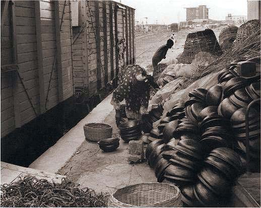
Isasun (lidded soup bowls) are transported to the train station for distribution
throughout the country. Ilorin, Nigeria. Photo by Ron du Bois, 1988.
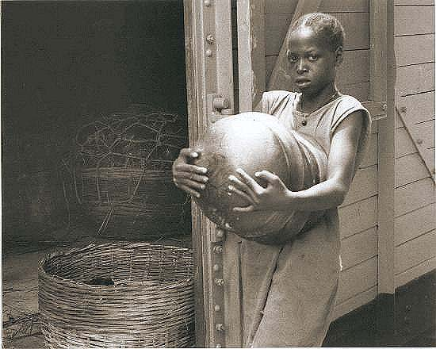
Isasun (lidded soup bowls) are transported to the train station for distribution
throughout the country. Ilorin, Nigeria. Photo by Ron du Bois, 1988.
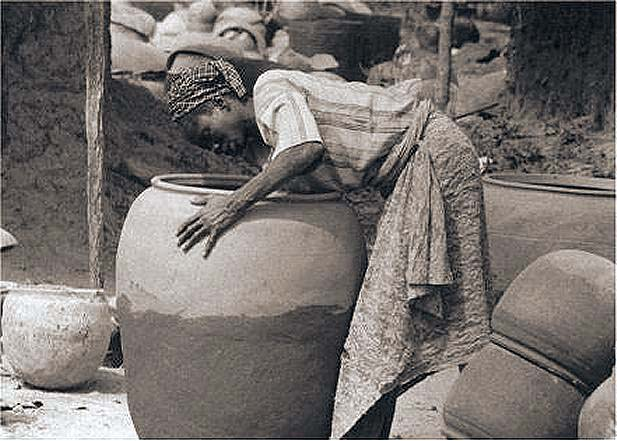
The largest community in Nigeria is called Ebu Dada, located on the outskirts
of Ilorin, Kwara State. The community consists only of Yourba women who are
hereditary full time professional potters. Here a greenware water vessel is
in process of final construction. When fired it will weigh some 125 lbs. Photo
by Ron du Bois, 1988.
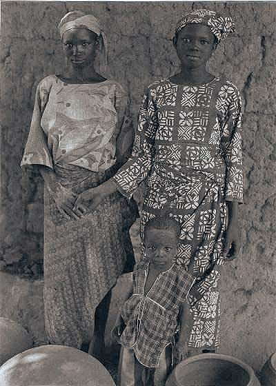
Adeja, (to the right of the photo) is a 15 year old professional potter. Dada
Compound, Ilorin, Nigeria
Photo by Ron du Bois, 1988.
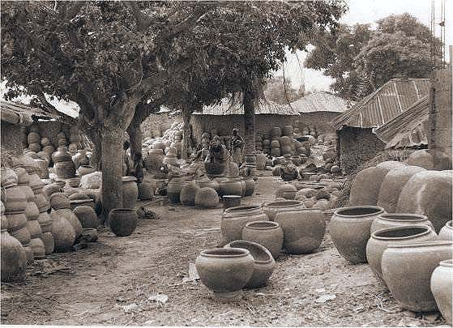
Dada Compound, Ilorin, Nigeria, Photo by Ron du Bois, 1988.
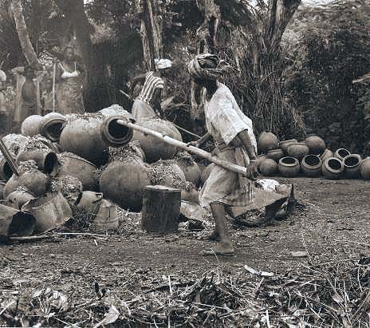
Final stages in the "open field firing" of terracotta storage vessels. The
women in both Arigidi and Erusu (In the Akoko area) employ only "upside down
construction". Their pottery skills are unique to this region of Yorubaland.
Photo by Ron du Bois, 1988.
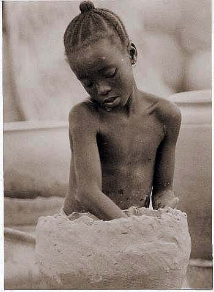
Young hereditary potter, Dada Compound Ilorin, Nigeria, 1988, Photo by Ron
du Bois.
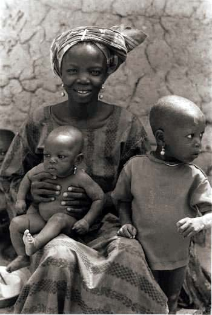
Yoruba hereditary potter and children, Dada Compound, 1988. Photo by Ron du
Bois.
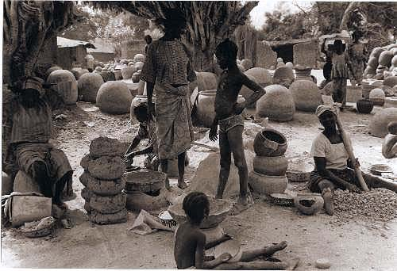
Dada Compound, Ilorin, Nigeria, 1988. Photo by Ron du Bois.
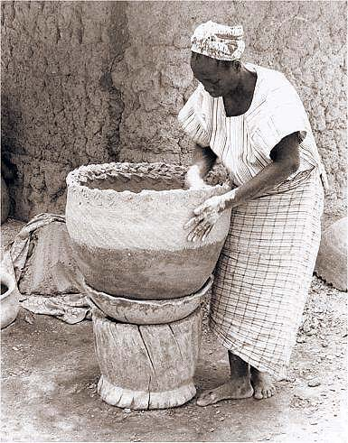
Dada Compound, Ilorin, Nigeria, 1988. Photo by Ron du Bois.
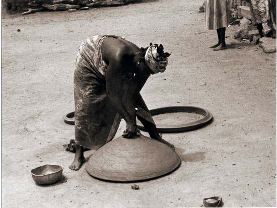
One of the most amazing feats of Yoruba pottery construction is seen in Arigidi,
Nigeria. Here all potters use upside down construction. This Yoruba woman
is making the final closure of a 30 inch cooking vessel, a remarkable potting
achievement, unique to this region. Photo by Ron du Bois, 1988.
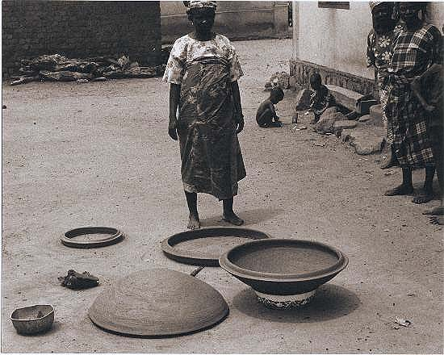
Three stages are seen in the construction of a 30 inch cooking vessel, Arigidi,
Nigeria, 1988.
Photo by Ron du Bois.